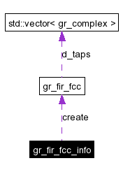

Main Page
|
Modules
|
Namespace List
|
Class Hierarchy
|
Compound List
|
File List
|
Namespace Members
|
Compound Members
|
File Members
gr_fir_fcc_info Struct Reference
#include <
gr_fir_util.h
>
Collaboration diagram for gr_fir_fcc_info:

[
legend
]
List of all members.
Public Attributes
const char *
name
gr_fir_fcc
*(*
create
)(const
std::vector
<
gr_complex
> &taps)
Member Data Documentation
gr_fir_fcc
*(*
gr_fir_fcc_info::create
)(const
std::vector
<
gr_complex
> &taps)
const char*
gr_fir_fcc_info::name
The documentation for this struct was generated from the following file:
gr_fir_util.h
Generated on Mon Oct 11 07:42:34 2004 for GNU Radio 2.x by
1.3.3
 1.3.3
1.3.3